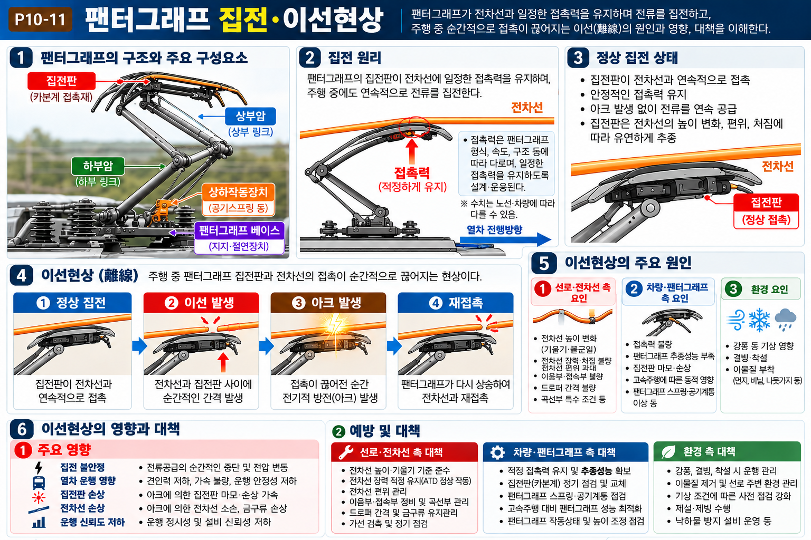

이선현상: 팬터그래프가 전차선에서 이탈하는 현상
→ 호(arc) 발생 + 전력공급 중단
| 순서 | 대책 | 원리 |
|---|---|---|
| ① | 드로퍼 간격 조정 | 전차선 파동 최소화 → 팬터그래프 안정 접촉 유지 |
| ② | 장력장치 개선 | 전차선 장력 일정 유지 → 이완·파동 방지 |
| ③ | 복합가선 적용 | 보조 조가선 추가 → 전차선 파동 억제 |
| 함정 선택지 | 정오 | 근거 |
|---|

| 문항 | 정답 | 핵심 해설 |
|---|---|---|
| Q1 | ③ | 이선현상 억제 방안: 드로퍼 간격 조정 / 장력장치 개선 / 복합가선 적용 가선금구류 중량화 → 질량 증가로 동적응답이 저하되어 오히려 이선이 심해짐. ⚠️ 함정: "중량화"는 이선현상을 '줄이는' 대책처럼 보이지만 실제로는 악화시킴 |
| Q2 | ④ | 진동·소음 원인: 레일 이음매, 차륜 플랫(平), 팬터그래프 이선(離線), 곡선 통과 시 횡력 등. 건축한계 확대는 공간 확보 목적이지 진동과 무관. |
| Q3 | ④ | 이선현상 원인: 장력 부족(처짐 과다), 고속 주행 시 공기력, 드로퍼 불균일, 경간 과대 등. 도전율 감소는 전압강하나 과열의 원인이 되지만 이선현상과는 직접 무관하다. |